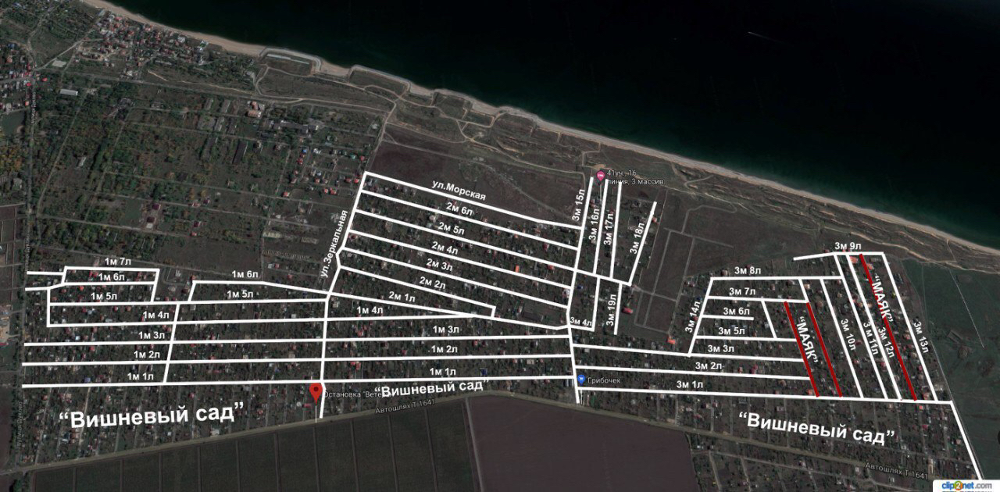

Головна
Садівниче Об'єднання Громадян "ВЕТЕРАН" зареєстрована 20.02.1992 року за адресою - Україна, 67840, Одеська обл., Овідіопольський р-н, село Молодіжне, ВУЛИЦЯ ЖОВТНЕВА, будинок 2.
Засновниками являються 87 фізичних осіб.
Станом на 2022 рік, СОГ "ВЕТЕРАН" є одним із найбільших дачних кооперативів Одеської області.
Територія СОГ "ВЕТЕРАН" розташована на узбережжі Чорного моря, між містом Чорноморськ та с. Санжійка.
СОГ "ВЕТЕРАН" нилічує більш ніж 1500 земельних ділянок.

* Якщо Ви знайшли помилку або маєте додаткову інформацію, яка, на Вашу думку, може бути цікава членам СОГ "ВЕТЕРАН" - надсилайте ії на електронну адресу.